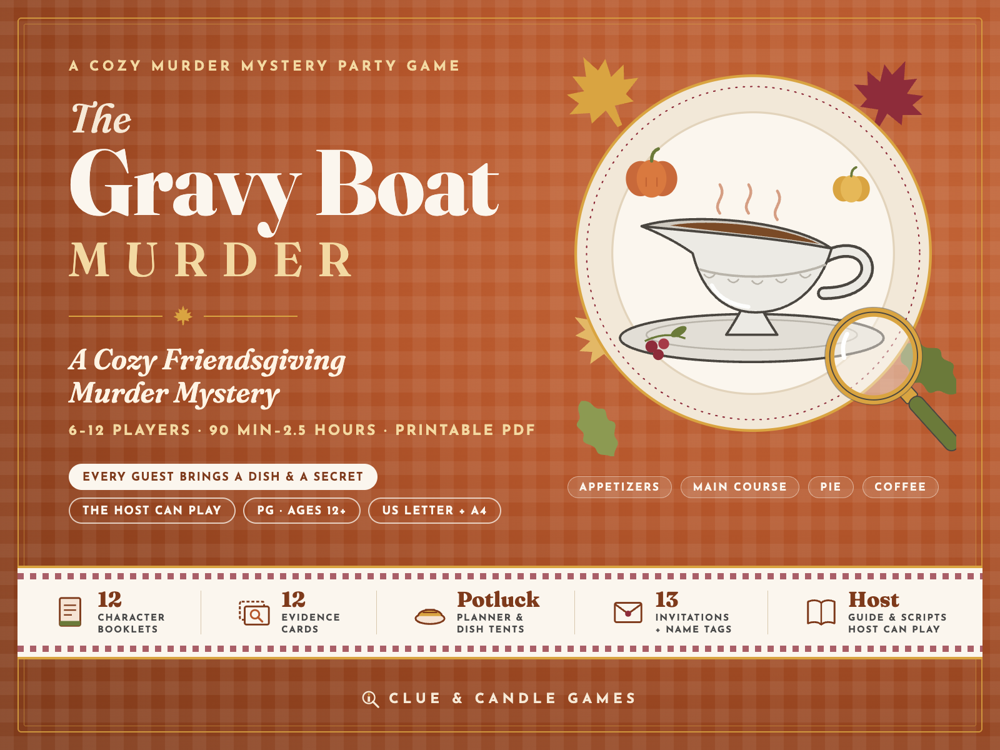
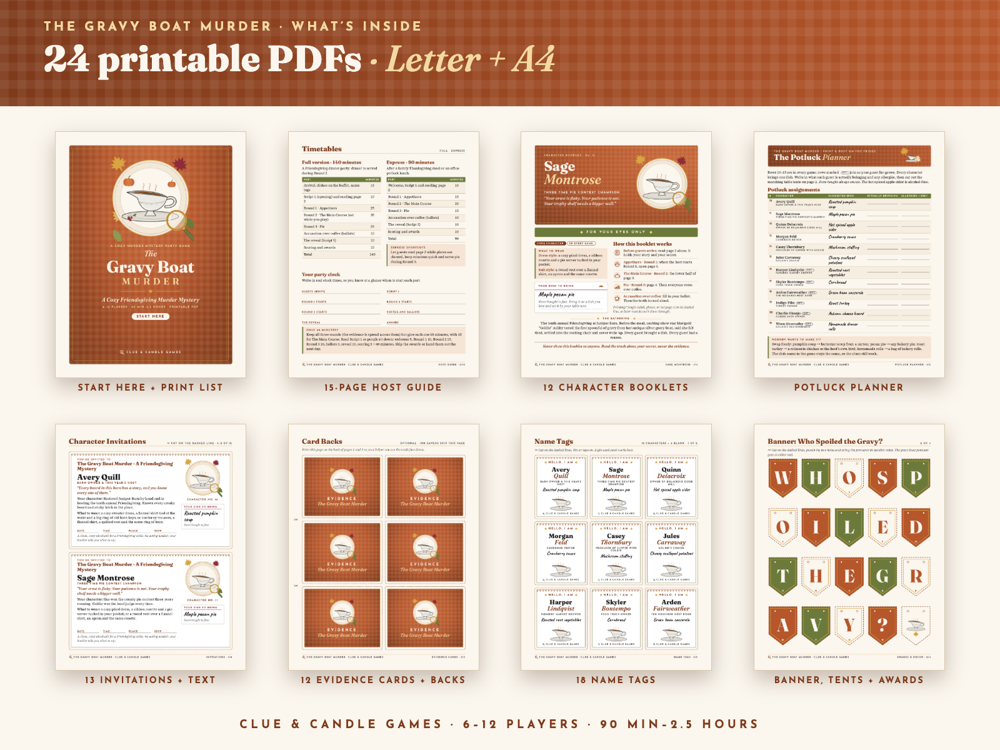
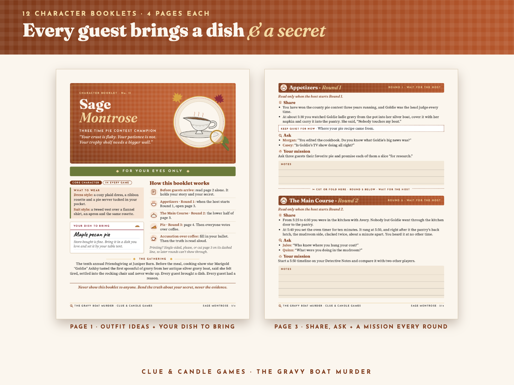
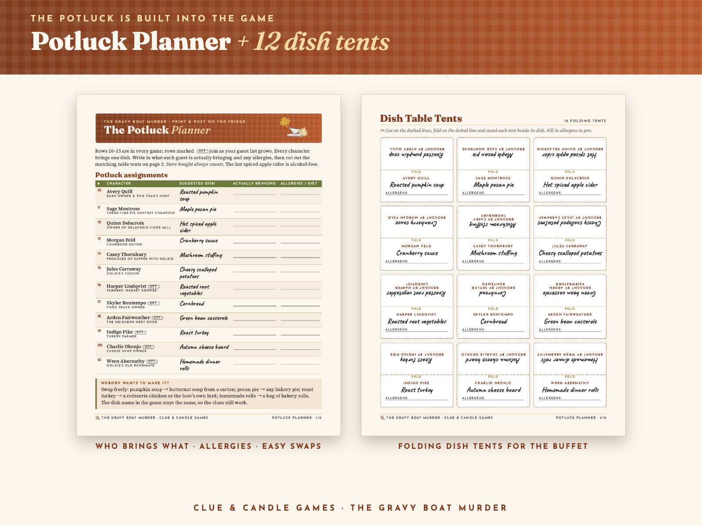
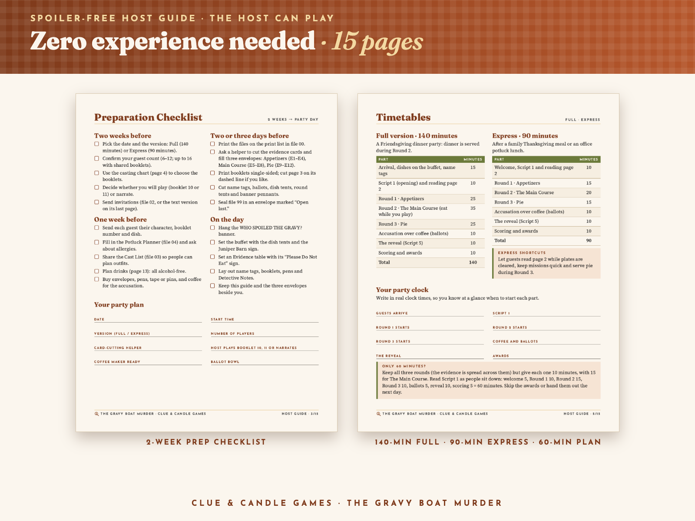
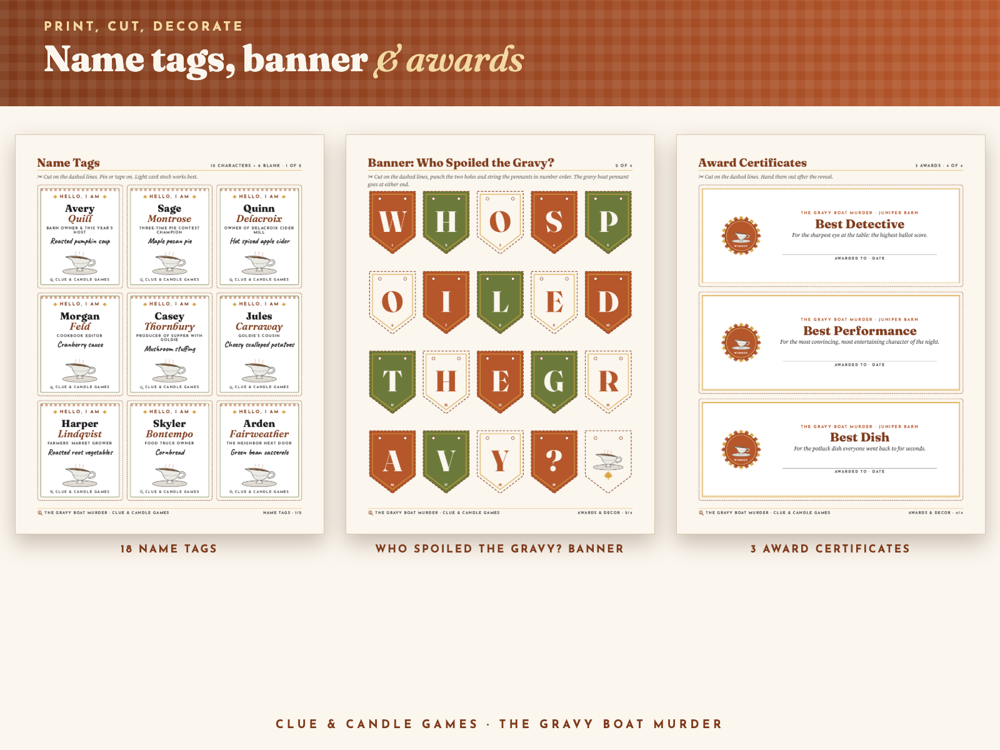

A cozy potluck murder mystery: every guest brings a dish and a secret. 6–12 Players · Ages 12+ · 90 minutes to 2.5 hours · printable PDF. US Letter and A4, from Clue & Candle Games, the party-games imprint of Hustle Studio.

$17.00 USD, one-time, for the whole party
Buy now: $17If the party doesn't work for your group, you get a full refund within 14 days. Email our support inbox, chenphien@gmail.com, within 14 days of purchase with your order email. We refund the full $17 through Waffo to your original payment method. You don't need to give a reason, and you don't need to have played it (see Terms). We reply within 2 business days.
🔒 Secure checkout. Payment is handled by Waffo Pancake, our merchant of record. Waffo processes the payment, handles any sales tax or VAT that applies and emails you a receipt. We never see your card details.
📥 Instant download. Right after payment you land on your download page with the ZIP and every PDF on its own. Nothing is shipped, and there's no subscription.
Every picture below shows real, unedited pages from the PDFs: the file covers, page 1 and page 3 of a full character booklet (Sage Montrose), the Potluck Planner and dish tents, two Host Guide pages, and the name tags, banner and award certificates. Nothing shown here gives away the answer or says who is innocent.





It's the tenth annual Friendsgiving at Juniper Barn. By tradition, cooking-show star Marigold "Goldie" Ashby tastes the first spoonful of gravy from her antique silver gravy boat, then makes an announcement. This year she promised news "that will change all of us." She tastes, says she feels tired, settles into her rocking chair and never wakes up: later she is found dead. The pie champion, the cider maker, the cookbook editor, the TV producer, Goldie's cousin and the host all had a reason to be near that gravy boat.
What makes it different is the potluck. Every character brings a dish, from roasted pumpkin soup and maple pecan pie to cranberry sauce and mushroom stuffing, and those dishes turn up in the story. The game runs in three courses: Appetizers, The Main Course and Pie, then the accusation over coffee and the reveal.
It works for Canadian Thanksgiving, an American Friendsgiving or an autumn dinner party in the UK or Australia: the story is about friends and food, not history. Booklets are separate PDFs, so you can text one to a guest and they can read it on their phone.
Every booklet is 4 pages: page 1 is public (role, two outfit ideas: a dress style and a suit style, and the dish to bring) and can be read before the party; page 2 holds the character's story, secret and alibi; pages 3 and 4 hold the three rounds and note space, opened only when the host calls them. In every round, players get things to share, a question for each of two named characters and a small social mission. See the real page 1 and page 3 of Sage Montrose's booklet above.
Yes. Every step of the answer can be worked out from the 12 evidence cards and the innocent core booklets. The 5-page sealed solution lays out the six-step clue chain and explains why each of the other 11 suspects is innocent. The story is original and was written with AI assistance, then edited and checked clue by clue for fair play and timeline consistency. If your group still finds a gap in the logic, tell us: you get your refund, and we fix the file.
The same 24 PDFs in US Letter and in A4 (48 PDFs), plus 1 ZIP that holds everything. After purchase every file can also be downloaded on its own from your download page. You only print what your party size needs; file 00 gives the exact page total for 6–12 players. File 22 is optional (the same 12 booklets in one file).
| # | File (in both US-Letter/ and A4/) | Pages |
|---|---|---|
| 00 | Start Here: file guide, print list with page totals for 6–12 players, 6 FAQs | 4 |
| 01 | Host Guide: prep checklist, casting chart for 6–12 (plus duos for 13–16), Full (140 min) and Express (90 min) timetables, a 60-minute plan, Scripts 1–4, how to reveal, hosting tips and big groups, alcohol-free drinks and table setting, potluck and allergies, printing tips. No spoilers. | 15 |
| 02 | Invitations: 12 character invitations (2 per page) with each guest's dish, 1 open invitation plus a "How the night works" guest card, and a text version for group chats | 8 |
| 03 | Cast List: the victim and all 12 suspects with public bios, outfit ideas and dishes | 3 |
| 04 | Potluck Planner: a 12-row dish and allergy planner and 12 folding dish table tents | 2 |
| 10–15 | Booklets: Avery Quill, Sage Montrose, Quinn Delacroix, Morgan Feld, Casey Thornbury, Jules Carraway (6 core characters) | 4 each |
| 16–21 | Booklets: Harper Lindqvist, Skyler Bontempo, Arden Fairweather, Indigo Pike, Charlie Okonjo, Wren Abernathy (6 optional characters) | 4 each |
| 22 | All Booklets Combined (the same 12 booklets in one file) | 48 |
| 30 | Evidence Cards: 12 cards (E1–E12) plus optional card backs | 3 |
| 31 | Name Tags: 12 character tags and 6 blank tags | 2 |
| 32 | Accusation Ballots: 4 per page, with scoring rules | 1 |
| 33 | Detective Notes: 12-suspect grid and a 4:00–7:00 pm timeline | 1 |
| 34 | Awards & Decor: 3 round table tents, a 19-letter "WHO SPOILED THE GRAVY?" banner, 2 table signs, 3 award certificates | 4 |
| 99 | Solution, Open Last (sealed): STOP page, the answer, the six-step clue chain, "why not the others," Script 5 and scoring | 5 |
ZIP structure
The-Gravy-Boat-Murder_ClueAndCandleGames.zip ├── US-Letter/ (24 PDFs) │ ├── 00-START-HERE.pdf │ ├── 01-Host-Guide.pdf │ ├── 02-Invitations.pdf │ ├── 03-Cast-List.pdf │ ├── 04-Potluck-Planner.pdf │ ├── 10-Booklet-Avery-Quill.pdf ┐ │ ├── 11-Booklet-Sage-Montrose.pdf │ │ ├── 12-Booklet-Quinn-Delacroix.pdf │ 6 core characters │ ├── 13-Booklet-Morgan-Feld.pdf │ │ ├── 14-Booklet-Casey-Thornbury.pdf │ │ ├── 15-Booklet-Jules-Carraway.pdf ┘ │ ├── 16-Booklet-Harper-Lindqvist.pdf ┐ │ ├── 17-Booklet-Skyler-Bontempo.pdf │ │ ├── 18-Booklet-Arden-Fairweather.pdf │ 6 optional characters │ ├── 19-Booklet-Indigo-Pike.pdf │ │ ├── 20-Booklet-Charlie-Okonjo.pdf │ │ ├── 21-Booklet-Wren-Abernathy.pdf ┘ │ ├── 22-All-Booklets-Combined.pdf │ ├── 30-Evidence-Cards.pdf │ ├── 31-Name-Tags.pdf │ ├── 32-Accusation-Ballots.pdf │ ├── 33-Detective-Notes.pdf │ ├── 34-Awards-and-Decor.pdf │ └── 99-SOLUTION-Open-Last.pdf └── A4/ (the same 24 PDFs in A4 size)
| Players | Booklets |
|---|---|
| 6 | 10–15 (the six core characters) |
| 7 | 10–16 |
| 8 | 10–17 |
| 9 | 10–18 |
| 10 | 10–19 |
| 11 | 10–20 |
| 12 | 10–21 |
| 13–16 | 10–21, with pairs sharing optional booklets as duos |
The cast tops out at 12 characters. With 13–16 guests, pairs share an optional booklet as a duo: that is still 12 characters, not 16 separate roles.
The Case of the Cold Cocoa is a free 10-page printable mini mystery for 4–6 players (about 45 minutes) from the same team: suspects, host scripts, evidence cards, ballots and a solution with its full clue chain. No email or signup needed. Play it to judge our writing and fairness before you spend anything.
Download the free mini mystery (PDF)What The Gravy Boat Murder adds over the free one:
Can the host play?
Yes. The Host Guide never reveals the answer. Take booklet 10 or 11 as listed in the casting chart, ask a helper to cut the evidence cards, and let a player read the sealed solution at the end.
Is it OK for teens and grandparents?
Yes. It's PG and suits ages 12 and up: no adult jokes, no flirting, no drinking tasks and nothing gory. Goldie dozes off in her rocking chair and is later found dead; nothing is described in detail.
We're not American, does it still work?
Yes. It's a Friendsgiving among friends, not a history lesson, and every file comes in A4 as well as US Letter.
Can we play after dinner in 90 minutes?
Yes. The Express timetable runs exactly 90 minutes, and the Host Guide includes a 60-minute plan too.
Do we have to drink?
No. There are no drinking tasks; the cider in the story is alcohol-free, and every drink idea in the Host Guide is alcohol-free.
Black-and-white printing?
Yes. Text is near-black on light pages, and every round, card and optional character is labeled in words, not only by color.
Are there reviews or party photos?
Not yet. Clue & Candle Games is a new brand, so there are no reviews or customer photos yet, and we won't invent any. That's why this page shows real interior pages (including a full booklet's page 1 and Round 1–2 page), offers a free mini mystery to try first, and backs every purchase with a 14-day no-questions refund.
The story was written with AI assistance. Are the clues really fair?
We edited it and checked it clue by clue against the solution: each of the six steps in the clue chain points to the evidence card or booklet line it relies on, and every other suspect has a written reason they're innocent. If your group finds a hole, email us within 14 days for a full refund.
How do checkout and refunds work?
Checkout is run by Waffo Pancake, the merchant of record: it takes the payment, handles applicable sales tax/VAT and emails your receipt. For a refund, email chenphien@gmail.com within 14 days with your order email; the refund goes back to your original payment method.
Licence?
Personal use: print as many copies as you need for your own parties. Please don't resell or share the files publicly. All names, places and events are fictional.
$17.00 USD, one-time
Buy now: $17🔒 Secure checkout by Waffo Pancake (merchant of record). Instant download. 14-day no-questions refund: if the party doesn't work, you get your money back. Digital download only; nothing is shipped.
Hosting again in December? A Very Merry Murder is our cozy Christmas murder mystery party game.